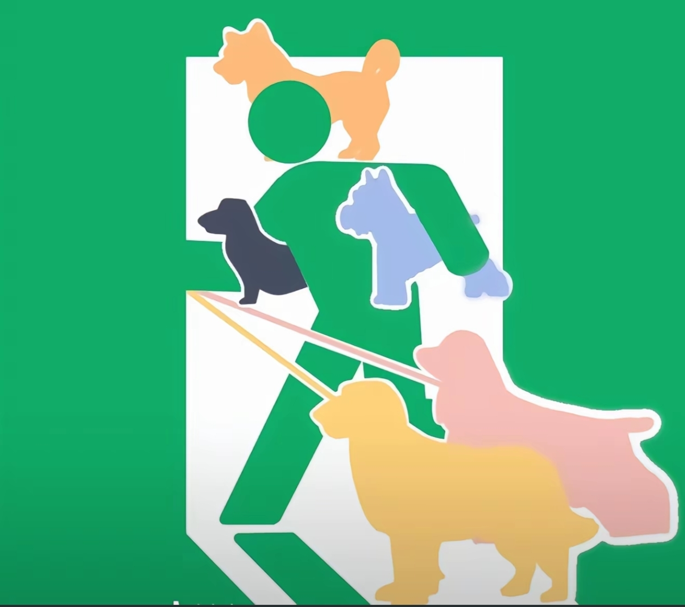
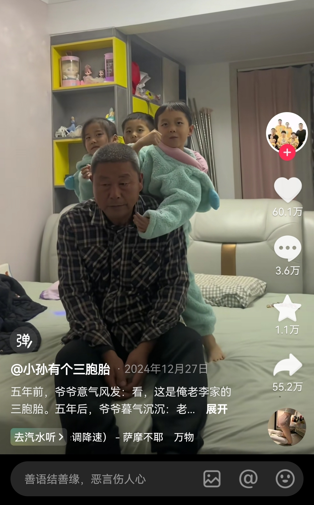
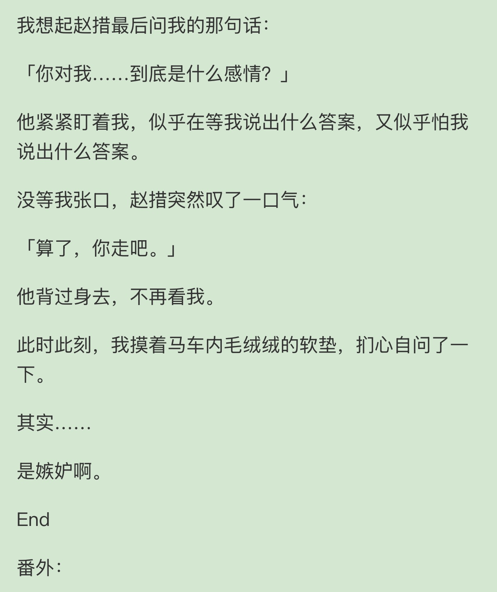
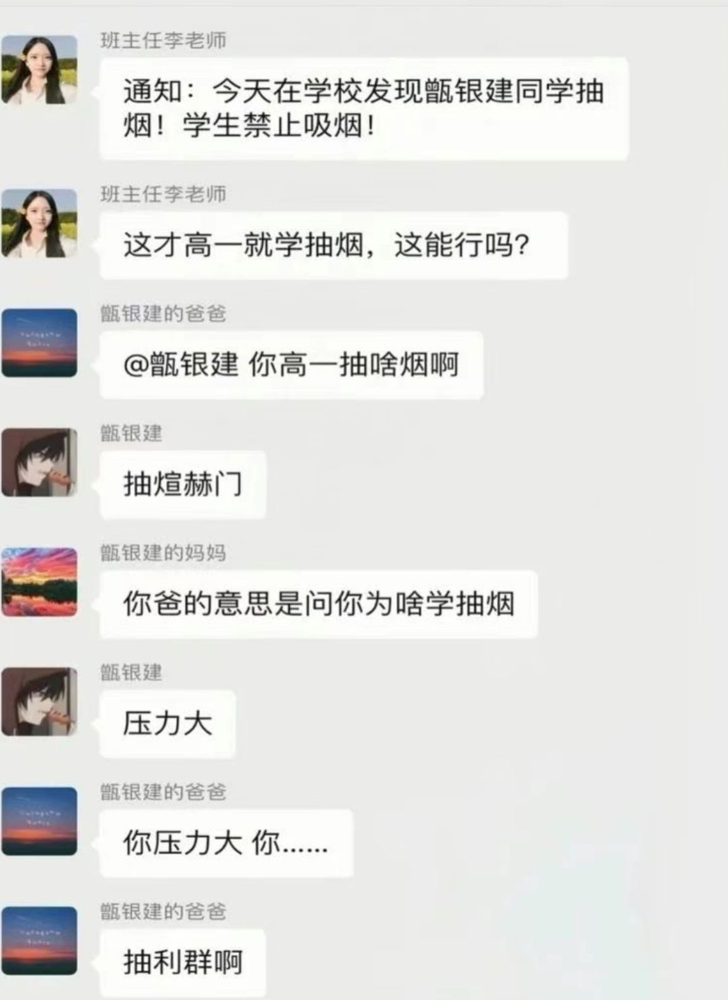
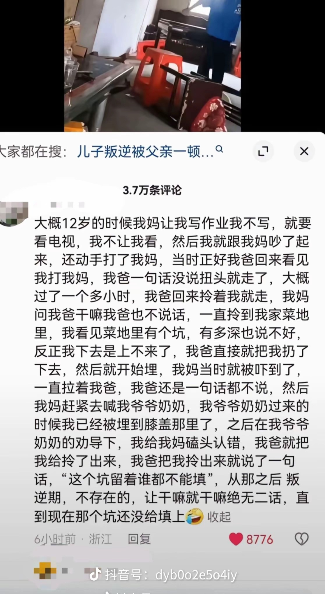

兄弟快来打台球，有妹子[憨笑]
咱奶家里的好几亩地都是当年追分追来的
后手比我兄弟都稳
走了宝贝[微笑] 
最佳赏味期的小鸡毛！
感觉嘴巴有点凑凑的[流泪]
这种生活过一天还行，时间长了你就知道了，看起来挺有意思的，实际也没什么烦恼
别看他现在挺轻松，人家以后也轻松
这对比一下子就出来了 
这个年龄，就算有孩子，孩子也不在身边，生活依然要这么过，所以，有没有孩子都一样
我同事的小姨就是丁克，也是快六十了 夫妻俩已经把中国玩了一圈了[泪奔]还特别热爱摄影
丁克夫妻起号就像喝水一样简单，因为现在年轻人都想过这种生活[流泪][流泪][流泪][流泪]
看起来就40多左右，没孩子没烦恼就是显年轻啊[流泪]
你要是没有孩子，你将没有任何烦恼[微笑]
所以说女性不生娃是不会老的
我非常好奇，喝了这些水，肚子真没有问题吗？[泣不成声]
谁有央行的货，我下6个点收，权当交个朋友
开局先和门柱兄弟打个招呼[赞]
我不踢足球 是不是输球后每个门将都会很自责[泣不成声]
小时候觉得她好恶毒 长大了发现她还没我恶毒[憨笑]
小时候我嗤之以鼻 现在逐步学习[宕机]
不是我小时候老讨厌他了[宕机][宕机][宕机]原来是我当时脑子不好
我说我怎么是个恋爱脑 原来是因为小时候把清醒的女人当反派了[暗中观察]
经典王中王采访环节
主播已经沉浸在自己的艺术上无法自拔了
又和仙家对话了[憨笑]
距离虎纹章鱼变近了，距离人越来越远了[憨笑]
这才是真正的音乐
做成纸钱烧过去了，阎王说要给我杀了[憨笑]
在这个群英荟萃的时代，一位上古真神小狗堡却隐退于世间，但是这个时代已经留下了祂的烙印[憨笑][OK]
孩子们别怕，我把高人请来了
像是那种古代的大祭司，掌握的能力还不足以与古神沟通，但在外人看来，已经不具人形了。虽然距离神还不算近，不过距离人已经很远了[赞]
作者只比观众提前半秒钟知道下一句是什么[憨笑]
小天才手表全是她的未接来电[流泪]
痛 太痛了
不建议这么小的孩子玩吉他，对发育不好，尤其是手部关节，容易练成吉他手
孩子怎么样了[流泪][流泪][流泪]
埋屎呢，嫌你被子臭
“哇最毒妇人心啊” “哇这人嘴好贱啊”[黑脸]
要最后说喜欢我只能说这文一般[憨笑]但要是说嫉妒那我只能说绝世爽文[憨笑] 
这个写的好，终于不是没脑子爱情各种重生
我特别喜欢里面女主对男主的感情，是嫉妒！嫉妒这样的天命大男主
被人恨是一种另类的能力
确实，穷小子最恨富家女，看到富家女有钱又漂亮，而且又对自己不搭理的时候，那恨的呀[捂脸][捂脸][捂脸][捂脸]而且这类穷小子都是具有非常非常非常脆弱的自尊心，哪怕你在他面前喝杯他觉得贵的饮品他都觉得自尊心受挫了[捂脸][捂脸][捂脸]搞笑死了
视频画面来自电视剧《岁月》，但文案主要依托于原著小说《沧浪之水》。电视剧对原著做了删改，比如梁致远上大学的剧情全给删了，所以只能用别的画面来配。“文不对画”，大家见谅。
当时看这个就记住了一句话:如果你想清高那就清高到底 无欲无求 那别人也不会看轻你 如果你要入世那就放下清高入世 不要清不清浊不浊的 即丢了好人的优点又学了坏人的缺点 就觉得男主就是各种 自己没有向上的雄心 又有着可笑极致的自尊心
梁致远就是典型的喜欢给自己端茶倒水的武则天[泪奔]
漂亮爱打扮的女同事容易被人背后嘀咕，生完孩子身材走样突然多了很多友善的目光，现在被嘀咕的成了人资新来的姑娘，画浓妆身材好
所以梁致远这辈子都无法达成阶级跨越，他也拒绝了多次命运的安排[微笑]
简单来说不喜欢主体性太强了呗，显得自己不是主体[黑脸]
泰坦尼克号里面就是穷小子和富家女的结合，多年前我在一本杂志上看到过有个人说男主死的正是时候，留下最美的回忆，现在看来是对的。
当年小小的老子怎么也想不到长恭竟然是反派[流泪][流泪][流泪]，震惊我一辈子
快来吧 马来西亚欢迎你们
长大后的样子
先天路虎揽胜圣体[赞][赞]
我的天，他是去幼儿园放贷的吗
长大自动解锁BOY短袖，路虎揽胜，在烧烤摊上百分之七十的概率刷新[呆无辜]
听姨的，长大不能拖欠农民工 工资
但凡懂一点动物心理学的都知道，小猫一直叫是对这环境十分不安，感到恐惧，表示它不想在你家，想在我家。对了，冻干也一起[酷拽]
源·全明星
詹公斯，兜里，克拉克林
菲律宾从哪找的这么多人才
我比各位早刷了两年抖音，给各位一个忠告，在抖音 要和光同尘
烈马后空翻的后续
这马 铁木真都驯服不了，它直接后空翻
[看] 
这一口下去，禁烟组织几十年白干
什么禁烟宣传都不如卡洛斯这一口[看]
烟草公司员工儿子在学校不受待见？要真有这种身份同学得跪在地上求着要两包利群[憨笑]
我爸要是烟草局局长，它每天回家我都愿意跪下给他磕三哥响头，邦邦响的那种[微笑]
你确定这个叫Frank的议员反对抽烟是吗？
然后康斯坦丁就在屏幕上抽烟了[泪奔]
今天抖音刷到的[泪奔] 
看到没，男人护着的女人，不管孩子还是婆家人，没有任何人能欺负。
这是南方的温柔妈妈吧？山东的妈妈嗷一嗓子，家里的狗都不敢动弹[捂脸]
有爸爸护着的妈妈真好，有些爸爸只会说："都是你惯的”
说真的，老公在家在孩子面前护着妈妈真的是孩子上过最好的课，受过最好的教育，比什么专家教授老师都管用！不接受任何反驳哦[比心][比心][比心]
女性题材最好的电影[赞]
Read more: